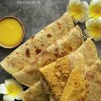
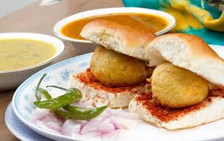

Modak
Modak is a famous Maharashtrian sweet. It is specially made during the festival of Ganesh Chaturthi, as it is believed to be Lord Ganesha’s favorite sweet. Ukadiche Modak means steamed Modak — the most popular type in Maharashtra.
|  |
Puranpoli Puranpoli is a famous sweet dish from Maharashtra.
It is a type of roti filled with a sweet stuffing.
People make it during festivals like Holi, Gudi Padwa, |
|  |
VadapavVada Pav is a very popular street food from Maharashtra. Vada is a spicy potato filling made by mashing boiled potatoes, adding spices, and coating it with gram flour (besan) batter. People eat it as a snack or quick meal. It is tasty, spicy, and loved by everyone from school kids to office workers. |
|
|
ModakModak is a famous Maharashtrian sweet. It is specially made during the festival of Ganesh Chaturthi, as it is believed to be Lord Ganesha’s favorite sweet. Ukadiche Modak means steamed Modak — the most popular type in Maharashtra. |